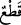
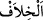
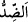
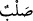

“Hakikat şu ki o, size büyü” ilmini “öğreten ulunuzdur.” Sizin hocanızdır. Bu
yaptığınızla siz de ona uymuş oldunuz. Kâşifî der ki: “Yâni o sizin üstâdınız,
mualliminiz ve sihirbazların büyüğüdür. İster ki sizinle mülk ve padişahlıkta beraber
olsun.”
Fir’avn bu sözüyle kavmi, îman konusunda sihirbazlara tâbi olmasınlar diye kafalarını
karıştırmak istedi. Çünkü o, Hz. Mûsâ’nın onlara sihir öğretmediğini biliyordu. Ancak
bilerek böyle bir şüpheyi ortaya attı, yaldızlı sözlerle topluma bunu telkin etti ve îmân
etmenin ancak kendi iznine bağlı olduğunu göstermek istedi. Ona göre sihirbazların
Fir’avn’un izni olmadan îmân etmeleri, mûteber değildi ve büyücüler Mûsâ (a.s.)’ın
talebeleri idi. Hz. Mûsâ’nın ortaya attığı şeye îtibar olmadığı gibi onların yaptıkları da
mûteber değildi. Fir’avn bu sözleri, insanların îman etme konusunda sihirbazlara
uymalarından korkunca söyledi. Sonra da onları şiddetli olarak tehdit etmeye başladı ve
şöyle dedi: “Şimdi elleriniz ile ayaklarınızı tereddüd etmeden çaprazlama
keseceğim.” Yani Allâh’a yemin olsun ki ellerinizi ve ayaklarınızı keseceğim.
Burada “
(kesmek)” fiilinin tef‘îl babından gelmesi çokluk bildirmek içindir. Aynı
şekilde gelecekte yapılacak fiilleri bildirmek için de kullanılır.
“
” kelimesi, “
” kelimesinden daha geneldir. Çünkü, iki zıddan her biri
diğerinden farklıdır, “el-hilâf”ta ise böyle değildir.
“Çaprazlama kesmek” her bir yandan bir uzvu kesmektir. Meselâ sağ eli ve sol ayağı
kesmek gibi. Bu da birbirine ters uzuvları kesmeye başlamakla olacaktır. Yâni ellerinizi
ve ayaklarınızı değişik/çaprazlama olarak keseceğim demektir. Çünkü kesilen uzuvlar,
el-ayak, sağ-sol gibi birbirinden farklı olduğu zaman “çaprazlama” diye vasfedilir.
Sihirbazlara verilen cezânın kesme olarak belirlenmesi ve kesmenin nasıl olacağının
belirtilmesi, diğer cezâlara göre daha şiddetli olduğu içindir.
“Ve sizi hurma dallarına asacağım!” “
”, bir insanı öldürme kasdıyla asmaktır.
Yâni sizi Nil nehri kıyısında diğer ağaçların dallarından uzun olan hurma ağacının
dallarına asacağım ki herkes sizi görsün ve ibret alsın. Fir’avn idam ettiği kişileri, Nil
kıyısındaki hurma dallarına asardı.
Âyette onların asılması anlatılırken tercih edilen “ ” harfi, Fir’avn’un astığı kişilerin
uzun süre orada kalacaklarına delâlet etmek içindir. Bu, zarfın içindekinin (mazrûf) zarf
durduğu sürece kalması gibi.
Hz. Mûsâ devrindeki Fir’avn’un insanları asarak öldürmeyi ilk îcâd eden olduğu
söylenmiştir
Eğer “Asânın büyük bir yılana (ejdere) dönüşüp Fir’avn’un sarayını yutmaya
yeltenmesinin ve Fir’avn’un onun şerrinden kurtulmak için Hz. Mûsâ’dan yardım
istemesinin üzerinden çok geçmeden onun bu derece ileri gidip sihirbazları tehdid
etmesi ve Mûsâ (a.s.) ile alay etmesi nasıl mâkul olabilir?” denirse, şöyle cevap
veririz: “Onun şiddetli korku içinde olması, hem de kendi onurunu korumak ve değerini
yükseltmek için kahramanlık gösterisinde bulunmuş olması mümkündür. Düşünecek